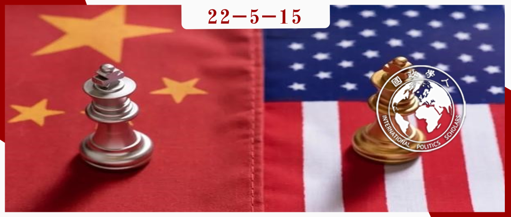

收录于合集

**中国崛起与美国霸权：东亚霸权秩序的
**
再谈判
作者： Rosemary Foot，牛津大学政治与国际关系系教授、牛津大学圣安托尼学院高级研究员。
编译： 陈想（国政学人编译员，对外经济贸易大学国际关系学院）
来源： Foot, R. China’s rise and US hegemony: Renegotiating hegemonic order in East Asia? Int Polit 57, 150–165 (2020). https://doi.org/10.1057/s41311-019-00189-5.

导读
文章讨论了中国崛起背景下中美在东亚地区的竞争，对于中国的和平崛起与美国的霸权护持等相关研究有参考价值。作者从西方学者的视角，审视中国经济崛起所带来的一系列影响。在作者看来，这包括了对中国承担地区治理责任的期待，而中国政府也正以各种方式以期满足这一期待。中国在区域经济、安全和公共产品供给上努力做出自身贡献，始终拥护多边主义、不扩散核武器，并将工作重点放在经济发展上，避免使用军事力量。然而，作者认为中国仍然面临政策困境，例如如何在保护自身利益的同时向邻国保证中国在该地区的影响力所带来的巨大不对称性能够促进地区秩序，而不是以疏远其他国家的方式破坏地区秩序。总体而言，到目前为止， 中国的立场是努力争取地区主导权，而非建立取代美国的霸权 。
摘要
中国的再崛起（resurgence）促使英国学派理论家对评估应对中国地位变化的大国战略产生了更大的兴趣。 在物质方面的崛起使中国进入大国行列，这带来了（世界各国）对中国大国管理的相应期待和责任，中国正以各种方式回应这些期待、承担相应责任 。虽然中国只是有选择地对美国主导的地区秩序的物质和规范基础发起挑战，但中国已经开始勾勒出一个地区的愿景，并使用其物质力量实现对东亚霸权秩序的一些主要制度的再谈判。然而，由于中国倡导的秩序愿景和其政策行动之间的不匹配，中国推动秩序转型的部分努力受到了阻碍。相应地， 中国在当前和未来对国际地位的追求已经遇到各种形式的阻力，包括推动在该地区开展网络化的防务合作 。
编译
01
引言
国际社会中的霸权是英国学派（English School）理论中的一个核心概念，被视为大国管理的主要形式。 中国的再崛起促使英国学派的理论家更加关注评估为应对中国国际地位变化而采取的大国战略，以及再崛起的中国挑战美国亚太地区霸权的程度 。
本特刊主要关注美国及其盟友和伙伴对中国崛起的反应，并假设中国的行动和政策是一系列涵盖美国和东亚国家的新网络化安全关系的主要驱动力。本文则重点阐述因中国物质地位的变化所产生的政策，以及由此产生的规范理念。最重要的是，本文强调了中国为寻求有效和更大范围的合作做出努力的形式和规模。这是应对正在重新谈判的、可能导致霸权过渡的地区秩序而采取的更广泛战略的一部分。
本文首先讨论了英国学派理论中详述的霸权转型的一些必要组成部分。在确认中国所经历的物质变化的社会后果之前，本文还探讨了中国是否对霸权主义的要求表现出很大的敏感性。本文接下来概述了中国对地区秩序的看法，特别是与中国各项工作会议、地区会议和战略文件有关的政策声明的内容。此外，本文还评估了中国在重新谈判与现任霸主及其主要东亚邻国的关系方面的成功程度。
02
英国学派与霸权秩序
英国学派的主要学者伊恩·克拉克（Ian Clark）在关于霸权和国际社会的几篇著作中强调，霸权不应该被定义为行使主导权，或等同于优先权；而是需要包括“创造一种独特的、可接受的秩序模式”（Clark 2011a, 24-26）。当克拉克转向对中国的探讨时，他认为 关于中国挑战程度的辩论应涉及中国将其令人印象深刻的物质力量增长转化为明显具有独特性的秩序的前景，这种秩序通过同意而非胁迫来吸引追随者 。因此，克拉克将霸权与合法权力的概念紧密联系在一起，认为仅仅使用武力和其他形式的物质力量，无法有效地建立新秩序或拒绝现有秩序（另见Beetham 1991）。克拉克还认为，这使中国处于两难境地：是被承认为合法的修正者还是合法的（甚至是激进的）地区秩序的创造者。中国需要“提出在国际社会中能够引起广泛共鸣的新内容”。
对秩序的讨论包含以下两个值得注意的问题。第一， 建立地区秩序的最终目标是维护国际或世界社会秩序 ——这一目标要取得成功，就必须以自我克制或谈判的形式对强国的行为进行约束，以获得其他国家的支持。第二， 还需要提供一个秩序的规范性愿景 ，虽然这一愿景可能提供了许多新内容，但仍可以被他者视为既有价值体系的一部分，这一价值体系使他者作为国际社会中相对独立的行为体存在。
本文接下来将研究中国再崛起的形式以及物质力量的增加给中国带来的机会。
03
中国的物质再崛起 **
**
对中国与地区秩序关系的关注源于其物质力量所带来的社会理解的实践。中国的物质再崛起使得该地区内外的政府官员承认其是一个大国。这一称号赋予中国在本地区地理范围内处理好地区关系的责任（Bukovansky et al. 2012）。自2001年中国加入世界贸易组织以来，有许多迹象表明，中国的物质地位提高这一论断得到了国际社会的广泛接受。其中最重要的是，奥巴马政府将中美关系指定为最重要的国家间关系，尽管美国政府实际上并没有给予中国平等的地位。
中国物质崛起最引人注目的信号是中国在21世纪头20年里实现了几个重要的经济里程碑 （Foot 2019）。中国在2009年成为最大的出口国，在2010年成为世界第二大经济体。2013年成为最大的贸易国，并在2015年生产了世界上约四分之一的产品。据世界银行估算，自1978年底改革开放以来，中国已使约8亿人摆脱了贫困。其公民享有人均约8800美元的高中等收入，而1979年则为人均275美元。就其直接海外影响而言，中国是美国国债的最大购买者，是世界上大多数国家特别是亚洲国家的主要贸易伙伴，同时也是其海外伙伴的主要贷款、赠款和投资来源。此外，中国日益增长的科学实力也给人留下了深刻印象。中国的国防预算位居世界第二，且已成为世界第三大武器出口国。
04
中国的东亚管理战略
物质实力的增强为中国提供了新的机会，使其能够挑战、重新谈判或进一步加强该地区主要制度的关键部分 。中国对地区秩序愿景的话语宣传似乎也是为了吸引追随者。本文首先概述了中国地区大国管理战略的一些核心内容，随后将探讨中国在秩序宣传方面的成功程度。
首先，中国向其邻国强调了国家主权的核心地位，即国际社会的基本准则 。在强调其对不干涉内政的承诺的同时，中国也表明了自己保护“核心利益”的决心，特别是在海洋和陆地的主权争端方面。
其次，国际组织，包括次区域、区域和区域外的国际组织，也是中国管理战略的一部分 。中国和其邻国都采取了安抚战略（reassurance strategy）。中国持续参加东盟地区论坛、亚太经合组织、东亚峰会和东盟国防部长会议（ADMM+）等会议。在1997-1998年亚洲金融危机的冲击和混乱之后，中国帮助建立了东盟+3框架。2002年，中国和东盟签署了自由贸易协定和南海宣言。2003年，中国加入了东盟的友好合作条约，该政策文件再次提到用不干涉和不使用武力的基本主权准则解决争端议题。中国还与日本、韩国一起建立了一个三边机制。通过上述举动，中国表明了对多边主义的承诺，并愿意被纳入一个包括美国的东亚主要盟友在内的网络化架构中。这些可以被视为重要的保证信号，也是对地区合作安全规范的承诺。
更为重要的是，中国在建立制度方面一直发挥着更大、更显著的领导作用 。2001年中国主导成立了上海合作组织，这是一个以中亚为核心的制度组织。中国创建的亚洲基础设施投资银行（AIIB）为中国具有专业经验的项目填补了重要的资金真空。“一带一路”倡议和亚投行一样，是中国支持经济发展的基础，是东亚地区社会的主要机构。这一计划以多种方式将中国与亚洲邻国以及非洲、中东、印度、印度洋等地区联系起来，被描述为中国对全球和区域商品供应的贡献，也是促进安全、稳定和繁荣的主要手段。
最后，中国地区战略的一个重要组成部分是处理好与地区霸主——美国的关系 。当前，中国更有针对性地争取美国对中国平等地位的承认。一个“大国关系的新时代”或“大国关系的新模式”，将是一个承认和尊重双方“核心利益”的关系，这种关系建立在不冲突、不对抗、相互尊重和互利合作的基础上（Foot 2016, 11; MoFA 2017）。在奥巴马政府时期，中美经常指出双方在阿富汗、伊朗、气候变化、经济相互依存等政策方面的共同利益以及合作空间。虽然两国关系中的竞争因素一直存在，但双方都试图维持彼此间关系的稳定。在特朗普政府时期，尽管名义上仍然存在一个全面的对话机制，但许多稳定性因素却已经改变。
05
重建地区规范性秩序的尝试
如前所述，为使中国增强的物质能力能够促进地区秩序的再谈判，这些能力需要与有吸引力的规范性愿景和一系列令人信服的理由结合起来。这一目标是通过“话语权”来实现的：引入新的术语来描述中国的总体目标，这些术语包括推动构建“人类命运共同体”、“亚洲命运共同体”，以及“互利共赢”。 中国已经意识到，构建叙事的能力是建立其影响力的主要因素 （Glosny 2016, 27; Heath 2018）。 它把与亚洲和发展中国家的关系放在首位，并提出了一系列概念和政策，以表明其良性的意图。
对于美国的霸权存在，中国表达了两方面的态度。首先，中国强烈反对美国官员不断重申的，70年来，“美国在亚太地区的军事存在在支持地区和平、稳定和发展方面发挥了重要作用”。其次，在西方国家没有发挥实际作用的情况下，中国别无选择，只能承担起为该地区提供秩序原则的重任。2008年的全球金融危机增强了这一观点的可信度。特朗普在其任期内的不可预测性和不可靠，特别是主张退出跨太平洋伙伴关系和发起贸易战，也进一步加强了这一观点。
最重要的是， 中国选择支持国家主导的发展项目作为巩固与邻国关系的关键，将发展与可持续的安全联系起来作为该地区的主要秩序制度，并将中国的公共产品（如BRI和AIIB）与该秩序原则联系起来 。“这种对安全的理解在该地区具有广泛的吸引力：经济发展和增长对国家、国家间以及区域层面的安全建设具有重大贡献……经济和安全领域在重要性方面不是非此即彼的割裂关系，而在很大程度上是相互关联的”（Foot and Goh 2018, 16）。
蒂莫西·希思（Timothy Heath）认为，中国的核心思想是“全面”发展“政治、安全和社会秩序，以适应由中国经济实力决定的新现实”，并建立一个更加牢固地植根于亚洲经济力量之源的新的安全秩序，逐步取代美国的角色（Heath 2014）。
06
**通往联盟霸权的道路？
**
在西方大国，特别是美国，显然已经失去了对自由主义模式的依赖和信心的时候，中国正在阐述这些主要与经济安全有关的观点，并以政策行动来支持这些观点 。一个更强大的中国已经出现，世界部分认同了中国的发展方法和政治经济模式。中国的价值观明显增多，其思想可以在世界范围内找到更多的追求。这种有利的环境应该能让中国至少形成克拉克所说的“联盟霸权”——尽管作为地区秩序重塑者或创造者的角色被接受或合法化，但这种接受可能仅限于“有限的支持群体”（2011b, 123; Goh 2019, 635）。这些发展对任何向地区霸权的过渡都会产生深远的影响。
中国只是有选择地对地区秩序提出异议，并继续作为其邻国的主要贸易和投资伙伴；美国对发展援助的关注，尤其是在基础设施领域，将经济发展与更好的安全相联系。中国的金砖倡议提出了这样的前景：成功的基础设施建设。
词汇积累
英国学派 ******English School
**
安抚战略 **** **reassurance strategy
**
东盟国防部长会议 **ADMM+
**
亚洲基础设施投资银行 AIIB
一带一路倡议 **BRI
**
审校 | 林怡娉 董 黛
排版 | 汪平平 苏伊文
文章观点不代表本平台观点，本平台评译分享的文章均出于专业学习之用, 不以任何盈利为目的，内容主要呈现对原文的介绍，原文内容请通过各高校购买的数据库自行下载。

国政学人
支持学术公益与知识传播
微信扫一扫赞赏作者 __赞赏
已喜欢，对作者说句悄悄话
取消 __
发送给作者
发送
最多40字，当前共字
上一页 1/3 下一页
长按二维码向我转账
支持学术公益与知识传播
受苹果公司新规定影响，微信 iOS 版的赞赏功能被关闭，可通过二维码转账支持公众号。